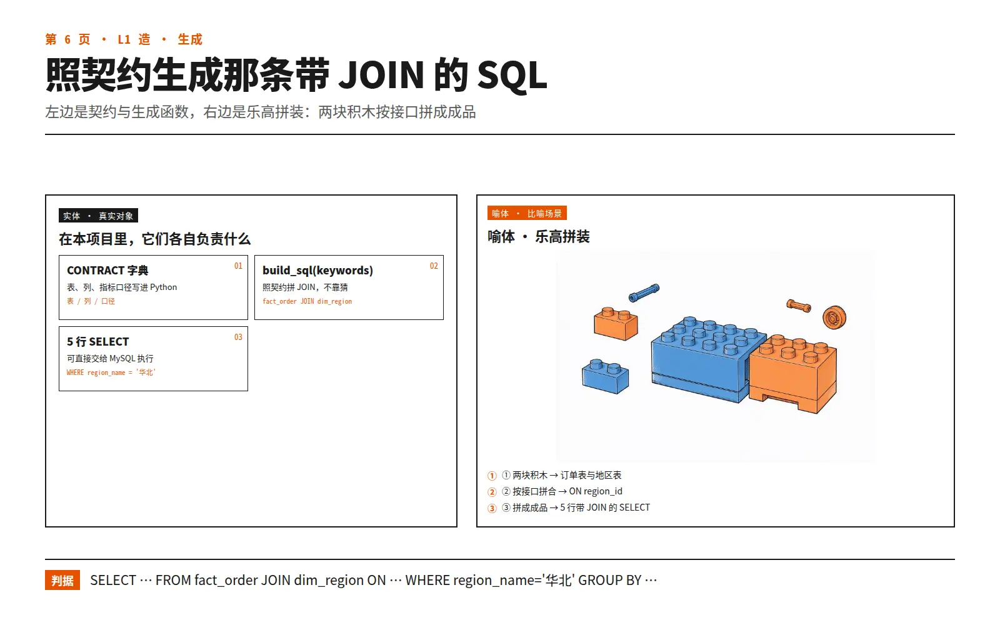
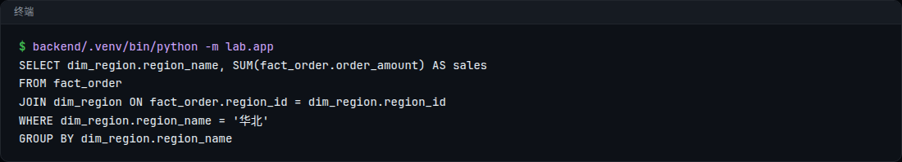

练本 · 阅读版（md 正典派生，改内容请改 tutorial/page-06.md）
第 6 页 · 照契约生成那条带 JOIN 的 SQL
城市坐标 · P6 办事指南与规则室（交付物 ⑧）｜照办事指南（契约）把两把钥匙拼成一张取货单（SQL），先只写在纸上。
前置：第 0 页备好环境；本页接第 5 页留下的 lab/app.py 与 8000 端口的服务。
这一页构建什么
两样东西：一张契约字典 CONTRACT（把第 1、2 页 MySQL 里的表、列、指标口径写成 Python 字典），和函数 build_sql(keywords)——它照着契约，把第 5 页抽出的 ["华北","销售额"] 拼成一条带 JOIN 的 SELECT。
这一页只 print，不执行。

猜一猜
动手前写下答案：拼出来的 SQL 会 JOIN 哪两张表？WHERE 用的是 dim_region 的哪一列？WHERE 那行等号的右边会是什么？
动手
要改的文件是 lab/app.py。改完先按 Ctrl+S 保存再跑——本页不用重启终端 1 的服务。
不保存的症状：python -m lab.app 每次现读文件，不保存跑的还是第 5 页的旧代码（症状见「对账」）。
下面这段共 24 行，分两步放：CONTRACT 和 build_sql 插在文件中间，剩下的 4 行（两个空行 + __main__ 入口）追加到文件最末尾。
别整段一起插：
CONTRACT = {
"tables": {
"fact_order": ["region_id", "order_amount", "order_id"],
"dim_region": ["region_id", "region_name"],
},
"metrics": {"销售额": "SUM(fact_order.order_amount)",
"订单量": "COUNT(DISTINCT fact_order.order_id)"},
"region_values": ["华北", "华东", "华南", "西南", "华中"],
}
def build_sql(keywords: list[str]) -> str:
region = next(k for k in keywords if k in CONTRACT["region_values"])
metric = next(k for k in keywords if k in CONTRACT["metrics"])
sql = f"""SELECT dim_region.region_name, {CONTRACT['metrics'][metric]} AS sales
FROM fact_order
JOIN dim_region ON fact_order.region_id = dim_region.region_id
WHERE dim_region.region_name = '{region}'
GROUP BY dim_region.region_name"""
return sql
if __name__ == "__main__":
print(build_sql(extract_keywords("华北销售额")))
第 1 步：把前 20 行插中间。 从 CONTRACT = { 到 build_sql 的 return sql，共 20 行（中间的空行也算），插到 extract_keywords 函数下面、@app.get("/health") 上面。
第 2 步：把剩下的 4 行追加末尾。 就是 return sql 后面那两个空行，加上 if __name__ == "__main__": 和它下面缩进的 print(...)，共 4 行。
放哪：追加到 lab/app.py 的最末尾，也就是 @app.post("/api/query") 函数之后，让它成为全文件的最后一个块。
if 和 print 这 2 行是程序的入口，故意放最后：uvicorn 导入模块时不执行，只有 python -m lab.app 才执行。
然后在仓库根目录跑（不用起服务，终端 1 那个服务开着也不影响）：
system/backend/.venv/bin/python -m lab.app
对照原文件：CONTRACT 是 system/contracts/schema.contract.yaml 的浓缩版，你可以打开原文件对照。
三处对应：fact_order.region_id 指向 dim_region.region_id（外键），销售额 的口径是 SUM(fact_order.order_amount)，华北 是 dim_region.region_name 的一个取值。
你应该看到
SELECT dim_region.region_name, SUM(fact_order.order_amount) AS sales
FROM fact_order
JOIN dim_region ON fact_order.region_id = dim_region.region_id
WHERE dim_region.region_name = '华北'
GROUP BY dim_region.region_name

对账
- 为什么 JOIN 这两张表？ 金额
order_amount在fact_order，地区名region_name在dim_region，而“华北”这个值只存在后者。 - 必须连起来：要把“华北的金额”加出来，必须靠
region_id把两张表连起来，否则WHERE dim_region.region_name = '华北'无从下手。 WHERE用dim_region.region_name，不是province：province里存的是“北京市”，而“华北”是大区名，在region_name列。用错列，查出来会是空的。- 等号右边：
'华北'就是build_sql里region变量的值，来自第 5 页抽出的关键词。 - SQL 是照契约拼的，不是让 AI 直接写的：表名、列名、指标公式都能在
CONTRACT里逐字对上，错了你能查出来。 - 只 print 不执行：
print出来说明拼接成功；这条 SQL 到第 7 页才交给数据库执行。 - 服务没起也正常：
print在if __name__ == "__main__":里，只有命令行直接运行这个文件时才执行；uvicorn 导入lab.app时不会执行它。 - 输出 0 字节 = 没保存：
python -m lab.app跑完退出码 0、屏幕上一个字都没有，多半是lab/app.py还没存盘——跑的是第 5 页那份没有__main__块的旧文件（echo $?也是 0，看不出错）。按 Ctrl+S 保存再跑。
你现在拥有：一个照着契约把关键词拼成带
JOIN的SELECT的build_sql；它是第 7 页交给 MySQL 执行的那条命令，拼得对不对，在这一页就能逐字核对。
自己改一下
把最后一行里的 "华北销售额" 换成 "华东销售额"，再跑一次，看 5 行里哪一行变了。
（参考：只有第 4 行 WHERE dim_region.region_name = '华北' 变成 '华东'，其余 4 行一字不变。）
再换成 "华南订单量"：SELECT 那行里的 SUM(fact_order.order_amount) 变成了什么？
（参考：变成 COUNT(DISTINCT fact_order.order_id)；同一行末尾的 AS sales 不变，WHERE 那行同时变成 '华南'。）